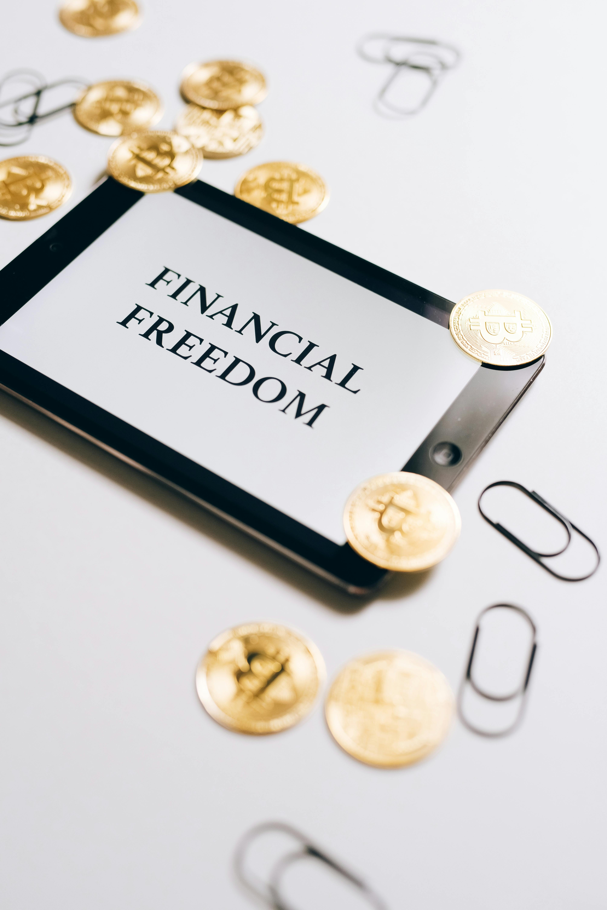

Sobre mí

Hola, soy Luciano Beccacece, un argentino por el mundo. A los 21 años definí mi misión, visión y valores personales. Más adelante los compartiré, no seas ansioso. Esta es una de las frases que más me repito, ya que en el afán de alcanzar mi misión, a veces olvido disfrutar del proceso y sus enseñanzas. Por eso, siempre me digo: "No seas ansioso, Luciano, todo llega."
Todo llega, pero solo si nos movemos para buscarlo. Ganar la lotería no es una opción en este juego llamado "Vida". El verdadero desafío es iniciar este movimiento: ¿hacia dónde? ¿por qué empiezo? Estas y muchas otras preguntas nos abruman al comenzar. Esa será nuestra batalla constante en este juego. La diferencia radica en si nos rendimos cuando nos sentimos abrumados o cuando las cosas no salen como esperamos.
Te digo esto porque he pasado por situaciones complicadas en mis estudios, trabajo y vida familiar. Estas experiencias me han dado herramientas y habilidades para enfrentar esos momentos de "GAME OVER". La realidad es que esos momentos no son el fin. Cada vez que sientas que llegó un momento "malo", felicítate: ahora eres más fuerte y estás mejor preparado para continuar el juego.
La clave y el resumen de todo lo comentado es la "resiliencia". No dejes que el pasado sea solo pasado, úsalo a tu favor y aprende de él. Por último, si realmente deseas cambiar, podrás superar cualquier obstáculo que se presente en tu camino, por más comentarios, palos o piedras que te pongan al frente.
Me encantaría seguir explayándome sobre todos estos temas, porque me emocionan y me encantan, pero no quiero aburrirte. Voy a tratar de dejar información que me resulta útil o creo que nos pueda ayudar, en alguna parte de esta página que se irá desarrollando con el paso del tiempo de la mejor manera posible, como tú y yo en este hermoso juego que es "Vida".
Si has leído hasta aquí, espero haber aportado algo positivo y motivador a tu vida. Como dijo Gustavo Cerati, "Gracias... totales".
Conceptos de Economía
- Inflación: Aumento generalizado de los precios de bienes y servicios en una economía.
- PIB: Producto Interno Bruto, el valor total de todos los bienes y servicios producidos en un país.
- Demanda y Oferta: Relación entre la cantidad de un bien que los consumidores desean comprar y la cantidad que los productores desean vender.
- Déficit Fiscal: Situación en la que el gasto del gobierno excede sus ingresos.
- Desempleo: Porcentaje de la fuerza laboral que está sin empleo pero busca trabajo activamente.
Conceptos de Finanzas
- Activos: Recursos que posee una empresa o individuo y que se espera que generen beneficios futuros.
- Pasivos: Obligaciones financieras o deudas de una empresa o individuo.
- Inversiones: Uso de capital para obtener un rendimiento o ganancia.
- Riesgo: Posibilidad de que los resultados de una inversión difieran de lo esperado.
- Rentabilidad: Medida de la ganancia o pérdida generada por una inversión.
Conceptos del Mundo Cripto

- Blockchain: Tecnología de registro distribuido que permite la existencia de criptomonedas.
- Bitcoin: La primera y más conocida criptomoneda, creada en 2009.
- Wallet: Billetera digital donde se almacenan criptomonedas.
- Mining: Proceso de validación de transacciones y creación de nuevos bloques en la blockchain.
- Smart Contracts: Contratos autoejecutables con las condiciones del acuerdo directamente escritas en código.
Contacto
Para contactarme, por favor envía un correo electrónico a ernebkcc@gmail.com.